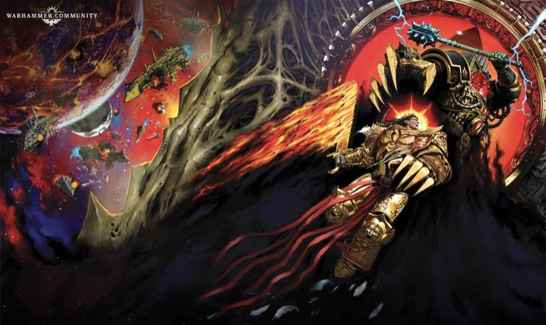

Imperium of Mankind
| Imperium of Mankind Imperium Humanus | |
|---|---|
  | |
| Motto: "For the Emperor!"[a] | |
 Artwork © Games Workshop Artwork © Games Workshop | |
| Capital and largest city | Imperial Palace, Terra Sol System, Segmentum Solar |
| Official languages | High Gothic (liturgical, legal) |
| Common languages | Low Gothic and countless planetary dialects |
| State religion | Imperial Cult (the Imperial Creed) Cult Mechanicus tolerated on forge worlds |
| Demonym | Imperial; Imperial citizen |
| Government | Theocratic, bureaucratic absolute monarchy ruled in the Emperor's name by an oligarchic council |
| Emperor | The Emperor (on the Golden Throne since 014.M31) |
| Lord Commander | Roboute Guilliman |
| Master of the Administratum | Vacant or unrecorded[b] |
| Legislature | Senatorum Imperialis (High Lords of Terra) |
| Formation | |
| Unification Wars | c. M30 |
| Treaty of Olympus | c. M30 |
| Great Crusade begins | c. 798.M30 |
| Horus Heresy | 005–014.M31 |
| Second Founding | c. 021.M31 |
| Age of Apostasy | M36 |
| Fall of Cadia | 999.M41 |
| Indomitus Crusade | c. 999.M41–present |
| Area | |
| Total | Most of the Milky Way; the Astronomican reaches about 50,000 light-years from Terra[1] |
| Worlds | Over one million[1] |
| Population | |
| Estimate | Unknown; uncounted trillions[c] |
| Economy | Command economy organised by the Imperial tithe |
| Currency | Throne Gelt (the "Throne")[2] |
| Time zone | Terran Standard Time |
| Date format | check · fraction · year.M## e.g. 0 345 997.M41 |
| Military | Imperial armed forces |
| Enemies | Chaos, Orks, Tyranids, Necrons, Aeldari, T'au Empire and others |
The Imperium of Mankind, usually called the Imperium of Man or simply the Imperium, is the interstellar empire of humanity, ruled from Terra in the name of the Emperor of Mankind. Spanning more than a million worlds across the galaxy, it is the largest and most populous state in known space and the sole legitimate government of mankind according to Imperial law.[3]
The Imperium was founded at the end of the 30th millennium by the Emperor of Mankind, who united a war-torn Terra in the Unification Wars, allied with the Mechanicum of Mars and then led the Great Crusade to reconquer the scattered worlds of humanity. The crusade ended in the Horus Heresy (005–014.M31), a galactic civil war in which half of the Emperor's Space Marine Legions turned to the Chaos Gods. Mortally wounded in the final battle, the Emperor was interred on the Golden Throne, a life-sustaining machine on which he has sat, neither alive nor dead, for more than ten thousand years.[4][5]
In the 41st millennium the Imperium is a stagnant, superstitious and brutally authoritarian theocracy. It is governed in the Emperor's name by the High Lords of Terra and an immense bureaucracy, the Adeptus Terra, worships the Emperor as a god through the Imperial Cult, and survives by perpetual war against xenos, heretics, mutants and the daemonic powers of the Warp. Its technology is preserved by rote rather than understood, and dissent, psychic mutation and alien contact are punished with death.[6] At the close of the 41st millennium the opening of the Great Rift split the Imperium in two; the resurrected primarch Roboute Guilliman now leads the Indomitus Crusade to hold it together.[7][8]
Imperial doctrine holds that the Imperium is humanity's only shield against annihilation, and its institutions are built for permanent war. Critics within its own archives, from sealed Inquisitorial reports to the writings of the Logos Historica Verita, have described it as an empire sustained less by its rulers than by inertia, faith and the sheer number of its people.[1]
Etymology
[edit]The name comes from High Gothic, the liturgical and legal language of the Imperium, in which Imperium denotes both "empire" and the authority to command. Its formal High Gothic name is Imperium Humanus. Administratum documents use the form Imperium of Man, while older Terran records favour Imperium of Mankind. Citizens rarely use either and simply call it "the Imperium".[6] Inhabitants of the Imperium are "Imperials" or "Imperial citizens", though most identify far more strongly with their home world, regiment or hive than with the Imperium as a whole.
The empire built during the Great Crusade is sometimes distinguished by historians as the Imperium of the Great Crusade or "the Emperor's Imperium", to contrast its secular Imperial Truth with the theocracy that followed the Horus Heresy.[9]
History
[edit]
Age of Strife and Unification
[edit]By the late 2nd millennium humanity had spread across the galaxy using Warp travel during a period remembered as the Dark Age of Technology, when thinking machines and Standard Template Constructs let colonies build anything they needed. The rebellion of the Men of Iron, the rise of psykers and the birth of the Chaos god Slaanesh, whose emergence tore open the Eye of Terror and wrecked the Aeldari empire, brought on the Age of Strife (also called Old Night). Warp storms isolated human worlds for some five thousand years, and Terra itself collapsed into warring techno-barbarian states.[1][4]
Late in the 30th millennium the being later known as the Emperor revealed himself on Terra and waged the Unification Wars, defeating the planet's warlords with his genetically engineered Thunder Warriors. He then concluded the Treaty of Olympus with the Mechanicum of Mars, which supplied the weapons and ships of the coming crusade in exchange for autonomy and recognition of the Emperor as an aspect of their own Machine God. The union of Terra and Mars is traditionally treated as the founding of the Imperium.[4]
Great Crusade
[edit]With the Space Marine Legions created from the genetic template of his twenty primarchs, the Emperor launched the Great Crusade in about 798.M30. Over some two centuries the crusade rediscovered thousands of human worlds, brought them into compliance by negotiation or force, and exterminated alien empires deemed a threat. The primarchs, who had been scattered across the galaxy as infants, were found one by one and given command of their Legions.[9]
The crusade imperium was officially secular. The Emperor promoted the Imperial Truth, a doctrine of reason that rejected all gods, including himself, and banned religion. After the victory at Ullanor he named Horus, primarch of the Luna Wolves, Warmaster and returned to Terra, leaving the crusade in Horus's hands and creating the Council of Terra, a civilian body of officials that would later become the High Lords.[9]
Horus Heresy
[edit]
Corrupted by the Chaos Gods, Horus rebelled in 005.M31. Nine of the eighteen known Legions followed him: the Sons of Horus, Word Bearers, World Eaters, Death Guard, Emperor's Children, Iron Warriors, Night Lords, Alpha Legion and Thousand Sons. The opening atrocities at Isstvan III and the Drop Site Massacre at Isstvan V were followed by seven years of war across the galaxy.[4]
The war ended at the Siege of Terra in 014.M31. When Horus lowered the shields of his flagship, the Vengeful Spirit, the Emperor and his companions teleported aboard. The primarch Sanguinius had already fallen to Horus before the Emperor reached him. In the final duel the Emperor did not merely kill Horus but annihilated his soul, so that the Chaos Gods could never return him; the Emperor was himself mortally wounded. Rogal Dorn carried the Emperor's broken body to the Golden Throne, the machine originally built to support the Emperor's secret webway project beneath the Imperial Palace. Malcador the Sigillite, the Emperor's regent, had already given his life holding the Throne during the siege.[5]
Great Scouring and the Codex reforms
[edit]In the Great Scouring that followed, the loyalist Legions drove the traitors into the Eye of Terror. To prevent any one commander holding such power again, Roboute Guilliman, primarch of the Ultramarines, wrote the Codex Astartes, which broke each Legion into Chapters of about a thousand warriors in the Second Founding. Fleets and armies were separated into the Imperial Navy and the Imperial Guard, and provinces were divided so that no governor controlled both troops and ships.[10]
The Council of Terra became the High Lords of Terra, and the worship of the Emperor, banned under the Imperial Truth, spread into the official Imperial Cult. Over the following centuries the Ecclesiarchy grew into one of the most powerful institutions in the Imperium. Guilliman held the office of Lord Commander of the Imperium until he was mortally wounded by his traitor brother Fulgrim and placed in stasis on Macragge.[10]
Age of the Imperium
[edit]The ten thousand years between the Heresy and the 41st millennium are poorly recorded and frequently contradictory, even in Imperial archives. Major events include:[1]
- The War of the Beast (M32), an Ork invasion that reached the Sol System, killed most of the High Lords and led to the creation of the Third Founding Chapters.[11]
- The Nova Terra Interregnum (M35), a centuries-long schism in which a rival Administratum on Nova Terra claimed the Segmentum Pacificus and western reaches.
- The Age of Apostasy (M36), when Goge Vandire seized both the Administratum and the Ecclesiarchy, beginning the Reign of Blood. He was overthrown by the Daughters of the Emperor, the forerunners of the Adepta Sororitas, and the preacher Sebastian Thor. Thor's reforms, including the Decree Passive, barred the Ecclesiarchy from keeping "men under arms".[12]
- The Gothic War (139–160.M41; open fleet war 143–151.M41), a naval campaign against Abaddon the Despoiler for control of the Blackstone Fortresses.[13]
Time of Ending
[edit]The final centuries of the 41st millennium, called the Time of Ending, brought a series of existential threats. The Tyranids arrived from beyond the galaxy with Hive Fleet Behemoth, defeated at the Battle of Macragge in 745.M41, followed by Kraken and Leviathan. The Necrons awoke from their tomb worlds, the T'au Empire expanded on the Eastern Fringe, and Ghazghkull Thraka invaded the hive world of Armageddon for a second and third time.[1]
In 999.M41 Abaddon's 13th Black Crusade broke through the Cadian Gate. When Abaddon rammed a Blackstone Fortress into Cadia, the fortress world that had guarded the Eye of Terror for ten millennia was destroyed, and a chain of warp storms spread across the galaxy.[7]
Era Indomitus
[edit]
The storms joined into the Great Rift (Cicatrix Maledictum), a scar of warp energy running across the galaxy from the Eye of Terror to the Hadex Anomaly. It cut the Imperium into the Imperium Sanctus on Terra's side and the Imperium Nihilus beyond it, where the Astronomican can no longer be seen and countless worlds have gone dark.[7]
At the same time the Aeldari of the Ynnari, working with Archmagos Belisarius Cawl, revived Roboute Guilliman. Guilliman reached Terra, spoke with the Emperor in the Throne Room, and resumed the office of Lord Commander. He launched the Indomitus Crusade with fleets reinforced by Cawl's Primaris Space Marines of the Ultima Founding, fought the Plague Wars against Mortarion in Ultramar, and began reforming the High Lords.[8] In the early 42nd millennium the primarch Lion El'Jonson of the Dark Angels also returned, and the Imperium faced new campaigns against Hive Fleet Leviathan, the Necrons of the Pariah Nexus and the Chaos-aligned forge-daemon Vashtorr.[3][14]
Geography
[edit]
The Imperium claims the whole galaxy but controls only a scattered fraction of its stars. Its worlds lie along stable warp routes, separated by vast regions of unexplored space, alien empires, dead zones and warp storms. Distances are measured not in light-years but in the time a voyage takes through the Warp, which can vary from days to centuries.[1]
Segmentae Majoris
[edit]For administration and defence the galaxy is divided into five Segmentae Majoris, each governed from a fortress world that houses its fleet command. Segmentae are subdivided into sectors and sub-sectors.[13]
| Segmentum | Region | Segmentum Fortress | Notable worlds |
|---|---|---|---|
| Segmentum Solar | Galactic centre-west, around Sol | Mars | Terra, Armageddon, Necromunda |
| Segmentum Obscurus | Galactic north | Cypra Mundi | Cadia, Fenris, the Eye of Terror |
| Ultima Segmentum | Galactic east; the largest | Kar Duniash | Macragge, Baal, Ultramar, the Eastern Fringe |
| Segmentum Tempestus | Galactic south | Bakka | Catachan |
| Segmentum Pacificus | Galactic west | Hydraphur | Nova Terra |
Imperium Sanctus and Imperium Nihilus
[edit]Since the opening of the Great Rift the Imperium has been divided into two halves. The Imperium Sanctus, which contains Terra and most of the southern galaxy, still receives the light of the Astronomican and the attention of the High Lords. The Imperium Nihilus lies beyond the Rift, cut off from Terra; its worlds are isolated, besieged and forced to fend for themselves, and many are presumed lost. Crossing the Rift is possible only at a few unstable passages, such as the Nachmund Gauntlet.[7][15]
Planetary classification
[edit]The Administratum classifies every world by its primary character and use. Classifications determine tithe obligations and how much attention Terra pays to a world.[2]
| Classification | Description | Examples |
|---|---|---|
| Hive world | Planets dominated by vast city-spires housing billions; major sources of manufactured goods and soldiers | Necromunda, Armageddon |
| Forge world | Industrial worlds ruled by the Adeptus Mechanicus | Mars, Ryza, Metalica, Stygies VIII |
| Agri world | Agricultural worlds feeding the hives | Ultramar's farm worlds |
| Fortress world | Militarised worlds guarding strategic routes | Cadia |
| Shrine world / Cardinal world | Worlds sacred to the Imperial Cult, or governed by the Ecclesiarchy | Ophelia VII |
| Feudal world / Feral world | Worlds kept at pre-industrial technology; prized recruiting grounds for Space Marines | Fenris, Caliban |
| Death world | Worlds lethal to unprepared humans | Catachan |
| Knight world | Feudal worlds whose nobles pilot Imperial Knights | Terryn |
| Civilised world | Standard developed worlds with mixed economies | Most Imperial planets |
Government and politics
[edit]
In theory the Imperium is an absolute monarchy: every law is issued in the Emperor's name and every official answers to him. In practice the Emperor has not issued a recorded command since his interment. Power is exercised by the High Lords of Terra and by the many Adepta, each of which has its own hierarchy, territories and agenda, and which compete for influence through intrigue, schism and occasionally open war.[1]
The Emperor
[edit]The Emperor of Mankind is the head of state, supreme commander and, to the Imperial Cult, a living god. His body is a desiccated corpse sustained by the Golden Throne; his mind is said to remain active, guiding the Astronomican and shielding humanity in the Warp. Sustaining him requires the sacrifice of hundreds of psykers each day, whose souls are consumed by the Throne.[16][d] The Adeptus Custodes guard him, and the Sisters of Silence guard the Imperial Palace's null vaults.
High Lords of Terra
[edit]The Senatorum Imperialis, whose members are the High Lords of Terra, is the supreme governing body. Traditionally it has twelve members drawn from the heads of the great organisations. Some seats are permanent, such as the Master of the Administratum, the Ecclesiarch, the Fabricator-General of Mars and the Inquisitorial Representative; others rotate among commanders such as the Lord High Admiral, the Lord Commander Militant of the Astra Militarum, the Grand Provost Marshal of the Adeptus Arbites and the Paternoval Envoy of the Navigators.[1]
Since his return, Roboute Guilliman has presided over the council as Lord Commander of the Imperium, regent in all but name. He has used the office to remove corrupt High Lords and to force sweeping reforms, a process the entrenched bureaucracy resists.[8]
Adepta and institutions
[edit]Imperial government is carried out by a set of organisations collectively called the Adepta. The principal ones are:[1]
| Organisation | Role |
|---|---|
| Administratum | The bureaucracy: tithes, records, census, logistics and the Departmento Munitorum |
| Adeptus Mechanicus | Technology, forge worlds and the Titan Legions; semi-independent under the Treaty of Olympus |
| Adeptus Ministorum (Ecclesiarchy) | The state church of the Imperial Cult |
| Inquisition | Secret police with near-unlimited authority, divided into the Ordo Malleus (daemons), Ordo Hereticus (heresy) and Ordo Xenos (aliens) |
| Adeptus Astra Telepathica | Recruitment and training of sanctioned psykers and Astropaths; operates the Black Ships |
| Adeptus Astronomica | Maintains the Astronomican psychic beacon |
| Adeptus Arbites | Enforces Imperial law, as distinct from planetary law |
| Navis Nobilite | The mutant Navigator houses that steer ships through the Warp |
| Officio Assassinorum | The Imperium's assassins, deployed only on the High Lords' order |
| Adeptus Custodes | The Emperor's personal guard |
Planetary government
[edit]Day-to-day rule of most worlds lies with a Planetary Governor (formally an Imperial Commander), often a hereditary noble. Governors enjoy wide autonomy so long as they pay the tithe, maintain the Imperial Cult, hand over psykers to the Black Ships, defend their world and raise regiments when called. Local laws, customs and even forms of government vary enormously. A governor who fails in these duties, or grows too independent, risks deposition by the Adeptus Arbites, the Inquisition or a Space Marine Chapter.[1]
Law and justice
[edit]Imperial law is enforced by the Adeptus Arbites, whose Judges concern themselves with crimes against the Imperium itself: rebellion, failure to pay the tithe, heresy and the like. Ordinary crime is a matter for local enforcers. Punishments are severe and frequently capital; condemned citizens may be sentenced to Penal Legions, mind-wiped into servitors or converted into Arco-flagellants. The Inquisition stands outside ordinary law entirely, and an Inquisitor may requisition any resource or order the destruction of a world by Exterminatus.[17]
Military
[edit]
The Imperium is permanently at war, and much of its economy exists to supply its armies. Its military is not a single force but a federation of separate services, each with its own law, recruiting grounds and chain of command. The division is a legacy of the reforms that followed the Horus Heresy (c. 014–021.M31), which were intended to stop any one commander from rebelling with an entire army as the Warmaster Horus had done.[10]
Command
[edit]In doctrine every soldier serves the Emperor of Mankind. In practice the forces are directed by the High Lords of Terra, among whom sit the Lord Commander Militant of the Astra Militarum, the Lord High Admiral of the Segmentum Solar and the Captain-General of the Adeptus Custodes. The Departmento Munitorum of the Administratum raises and supplies the regiments, and each segmentum has a fortress as its base. Since 999.M41 the forces have had a single commander, Roboute Guilliman, the Lord Commander of the Imperium, the first to hold such power since the Heresy.[1][2]
Armed services
[edit]The Astra Militarum, the Imperial Guard, is a vast army of ordinary soldiers raised by tithe from every world and numbering in the billions. Famous regiments include the Cadian Shock Troops, the Catachan Jungle Fighters and the Death Korps of Krieg.[18] The Imperial Navy holds the warfleets of the five segmentae, which carry the Guard and fight the Imperium's battles in space.[13] The Adeptus Astartes, the Space Marines, are superhuman warriors organised into around a thousand autonomous Chapters of roughly a thousand Marines each, among them the Ultramarines, Dark Angels, Blood Angels and Space Wolves.[10]
The Adeptus Mechanicus fields the Skitarii, the god-engines of the Titan Legions and the household Imperial Knights.[19] The Adeptus Custodes and the Sisters of Silence guard the Emperor and the Imperial Palace. The Adepta Sororitas, the Sisters of Battle, are the warrior nuns of the Ecclesiarchy, technically not "men under arms" under the Decree Passive.[20] The Inquisition commands the Grey Knights of the Ordo Malleus, the Deathwatch of the Ordo Xenos and the retinues of individual Inquisitors.[21] Each world also keeps a Planetary Defence Force, and the Adeptus Arbites and Officio Assassinorum serve the law and the High Lords by other means.
Recruitment
[edit]Most soldiers come from the Imperial tithe, which obliges every world to surrender part of its population as soldiers, sailors and psykers. The Munitorum raises regiments from these levies and moves them by Navy transport, sometimes to wars that have ended before they arrive. The Space Marines, the Mechanicus and the Ecclesiarchy recruit for themselves, and the Space Marines in particular choose from the young of their own recruiting worlds. In the Era Indomitus the Primaris Space Marines of the Ultima Founding have joined every Chapter, and the Indomitus Crusade has drawn on every service at once.[4][17]
Economy
[edit]The Imperial tithe
[edit]The Imperium has no single economy. Each world runs its own affairs, and the central government's interest is limited to the Imperial tithe: the share of produce, materials and soldiers every world must surrender. The tithe is set by the Administratum according to a world's classification and value, using a scale of grades that runs from Aptus Non (exempt, typically for frontier or devastated worlds) through the Solutio and Decuma grades to Exactis Extremis, the heaviest burden.[2] Tithes may be paid in kind (grain, ore, munitions), in psykers for the Black Ships, or in regiments for the Astra Militarum.
Interstellar trade exists but is slow and dangerous. Much of it is carried by Chartist Captains of the merchant fleet and by Rogue Traders, privileged dynasties whose Warrant of Trade lets them operate beyond the Imperium's borders. Local currencies are common; the Throne Gelt serves as a general Imperial unit of account.[2]
Technology
[edit]Imperial technology is advanced, but almost none of it is understood. The Adeptus Mechanicus treats engineering as religious ritual, maintaining machines by litany and forbidding innovation outside approved templates. The highest prize of the Quest for Knowledge is the recovery of Standard Template Construct fragments from the Dark Age of Technology. Archeotech weapons and vehicles may be thousands of years old and irreplaceable.[19] Thinking machines are banned outright, a legacy of the Men of Iron; servitors, lobotomised cyborgs, perform the roles robots would.
Transport and communications
[edit]Interstellar travel depends on the Warp. Ships protected by Geller fields can jump between systems, but only a Navigator, a member of the mutant Navis Nobilite, can steer them over long distances by sight of the Astronomican, the psychic beacon projected from Terra. Without it, ships can make only short, cautious jumps. Communication over interstellar distances relies on Astropaths, telepaths who send messages as symbolic dream-images that are often garbled or lost.[1]
Demographics
[edit]Population
[edit]No reliable census of the Imperium exists. The largest hive worlds hold tens of billions of people, and estimates for the whole Imperium run into trillions.[c] Life for most citizens is short, poor and hard: endless labour in hives, manufactoria or fields, service in the Guard, and a lifetime of devotion to the God-Emperor.[21]
Abhumans and mutants
[edit]Humanity in the Imperium includes several stable abhuman strains descended from colonists adapted to extreme environments. The Imperium accepts these under sanction, notably the huge, dim Ogryns and the small, sharp-eyed Ratlings, both used as Guard auxiliaries. The Squats, once a third prominent strain, were long believed destroyed; their kin returned in the 42nd millennium as the independent Leagues of Votann.[22] Unsanctioned mutants face discrimination, enslavement or extermination.
Psykers
[edit]Psychic ability is the Imperium's greatest danger and one of its essential resources. Untrained psykers can become gateways for daemons, so all must be surrendered to the Black Ships. A few are trained as sanctioned psykers or astropaths; others join the Astronomican choir; the rest are sacrificed to the Golden Throne.[16]
Languages
[edit]High Gothic is the language of law, liturgy and the upper ranks of the Adepta, and is unintelligible to most citizens. Low Gothic, the common tongue, varies so much between worlds that it is often mutually unintelligible across the Imperium. Many worlds keep their own native languages.[6]
Religion
[edit]The state religion is the Imperial Cult, which worships the Emperor as the God-Emperor of Mankind, protector of humanity and saviour against the powers of Chaos. It began during the Great Crusade as the underground Lectitio Divinitatus, despite the Emperor's own rejection of divinity, and became the Imperium's official faith after the Heresy.[9] It replaced the Imperial Truth, the Emperor's secular doctrine of reason, which had denied all gods and banned religion across the Great Crusade. The Adeptus Ministorum, or Ecclesiarchy, headed by the Ecclesiarch on Terra, administers it through a vast hierarchy of cardinals, confessors, priests and missionaries.
Belief and practice vary greatly between worlds. Many local cults venerate the Emperor in forms that the Ecclesiarchy tolerates so long as they recognise his supremacy; a world that rejects him faces war. The Cult Mechanicus of Mars worships the Omnissiah, whom it holds the Emperor to embody, and is tolerated under the Treaty of Olympus. The Imperium venerates thousands of saints, and pilgrimage to shrine worlds is a major feature of Imperial life.[20]
The worship of any other god, especially the Chaos Gods, is heresy punishable by death. The Imperium's ultimate enemy is the Ruinous Powers of the Warp, whose cults are its constant internal threat.[1]
Culture
[edit]Art and architecture
[edit]Imperial culture is dominated by religious and martial themes. Its architecture, sometimes called Imperial Gothic, combines vast scale with cathedral forms: buttresses, spires, statuary and skulls, a style carried through from planetary cathedrals to the hulls of warships. Common motifs include the Aquila, the skull as a symbol of mortality and devotion, purity seals, servo-skulls and devotional scripture.[6]
Calendar
[edit]The Imperium uses the Imperial Dating System, which records a date as a check number giving its accuracy, a fraction of the year, the year within the millennium and the millennium itself. A date written 0 345 997.M41 means the 345th thousandth of the year 997 of the 41st millennium, recorded on Terra. Warp travel distorts time unpredictably, and since the Great Rift many worlds can no longer tell what year it is.[1]
Symbols
[edit]The principal symbol of the Imperium is the Aquila, a double-headed eagle whose heads look to the past and the future, or by some accounts represent Terra and Mars. It appears on armour, banners, buildings, documents and ships, and is made as a gesture of devotion by crossing the hands at the chest.[4]
Foreign relations
[edit]The Imperium's doctrine holds that the galaxy belongs to humanity and that the alien must be destroyed. Formal diplomacy with xenos is rare, secret and almost always temporary. Its relationships include:[1]
- Chaos: total war with the traitor Legions, daemons and cults of Chaos, especially Abaddon's Black Legion.
- Orks: the most numerous enemy, forever invading Imperial space in vast Waaagh!s.
- Tyranids and Genestealer Cults: extragalactic predators, and their infiltrating cults inside Imperial worlds.
- Necrons: ancient androids reclaiming their former dominions.
- Aeldari: an occasional, unreliable ally. The resurrection of Guilliman was the work of the Aeldari Ynnari, and Aeldari seers sometimes intervene on the Imperium's behalf.
- T'au Empire: an expanding alien state on the Eastern Fringe that seeks to absorb human worlds into its Greater Good, opposed by the Damocles Gulf Crusade and later campaigns.
- Leagues of Votann: a human-descended, technologically advanced power that trades and occasionally fights alongside or against the Imperium.[22]
Timeline
[edit]| Date | Event |
|---|---|
| c. 797.M30[e] | The Emperor of Mankind unites Terra in the Unification Wars, the first act of the Imperium. |
| 712.M30 | The Treaty of Olympus binds the Mechanicus of Mars to the Emperor's cause. |
| c. 798.M30 | The Great Crusade begins, with the Space Marine Legions reconquering the scattered worlds of humanity. |
| 000.M31 | After the Triumph of Ullanor, Horus is named Warmaster and the Emperor withdraws to Terra. |
| 005–014.M31 | The Horus Heresy divides the Legions. Horus rebels at Isstvan III and is defeated at the Siege of Terra. |
| 014.M31 | The Emperor is entombed in the Golden Throne, and the Grand Council of Reconstruction takes charge. |
| c. 021.M31[f] | The Second Founding divides the surviving Legions into Chapters under the Codex Astartes. |
| 544–546.M32 | The War of the Beast, an Ork invasion that reaches the Sol System, kills most of the High Lords. |
| M35 | The Nova Terra Interregnum begins, a centuries-long schism in which a rival Administratum claims the western reaches. |
| M36 | The Age of Apostasy: Goge Vandire seizes the Administratum and the Ecclesiarchy and begins the Reign of Blood. |
| 139–160.M41 | The Gothic War is fought for control of the Blackstone Fortresses. |
| 745.M41 | The Battle of Macragge halts the Tyranid Hive Fleet Behemoth. |
| 999.M41 | Abaddon's Thirteenth Black Crusade destroys Cadia. The opening of the Great Rift splits the Imperium in two. |
| 999.M41 | Roboute Guilliman is revived and returns to Terra, and the Indomitus Crusade is launched. |
| c. 012.M42[g] | The Logos Historica Verita is founded to recover an accurate history of the Imperium. |
| early M42 | The primarch Lion El'Jonson of the Dark Angels returns, and the Imperium faces new campaigns against Hive Fleet Leviathan and the Necrons. |
See also
[edit]Notes
[edit]- ^ The Imperium has no single codified motto. "For the Emperor" is the near-universal battle cry and invocation across the Astra Militarum, the Adeptus Astartes and the Ecclesiarchy; Ave Imperator ("Hail, Emperor") is common in High Gothic liturgy.
- ^ The individual holders of most High Lord seats are rarely named in recent sources and change often; Guilliman purged and reshuffled the council after his return.
- ^ a b No census of the Imperium exists. Individual hive worlds are said to hold tens of billions, and the Administratum's records are incomplete, contradictory and centuries out of date.
- ^ Sources differ on the number of daily sacrifices. Older material cites "a thousand"; most recent books say only "hundreds".
- ^ Estimated; no record gives an exact year.
- ^ Estimated; no record gives an exact year.
- ^ Estimated; no record gives an exact year.
References
[edit]- ^ a b c d e f g h i j k l m n o p Warhammer 40,000: Core Book (9th Edition), pp. 20-23, 42-43, 45-46, 60 (Quote). Games Workshop.
- ^ a b c d e Haley, Guy. Dark Imperium (novel). Black Library, Ch. 9 "Imperator Gloriana," pp. 96-97.
- ^ a b Haley, Guy. Avenging Son (novel). Black Library.
- ^ a b c d e f Warhammer 40,000: Rulebook (8th Edition), pp. 22-39. Games Workshop.
- ^ a b Gathering Storm - Part Three - Rise of the Primarch (7th Edition), pp. 4-93. Games Workshop.
- ^ a b c d Codex: Imperial Guard (6th Edition), pg. 6. Games Workshop.
- ^ a b c d Codex: Militarum Tempestus (6th Edition), pp. 5-13. Games Workshop.
- ^ a b c Codex: Space Marines (6th Edition), pp. 6-7. Games Workshop.
- ^ a b c d Warhammer 40,000: Rulebook (6th Edition), pp. 134-154, 158-177, 180-183, 189-191, 195, 402-403, 408-409. Games Workshop.
- ^ a b c d Codex: Space Marines (5th Edition), pp. 6-7. Games Workshop.
- ^ Warhammer 40,000: Rulebook (5th Edition), pp. 101-125. Games Workshop.
- ^ Warhammer 40,000: Rulebook (4th Edition), pp. 88, 90-91, 92-97, 100-101. Games Workshop.
- ^ a b c Warhammer 40,000: Rulebook (3rd Edition), pp. 98-115. Games Workshop.
- ^ Codex Imperialis (2nd Edition), pp. 10-15. Games Workshop.
- ^ Space Marine (2nd Edition), pg. 5. Games Workshop.
- ^ a b Space Marine (1st Edition), pp. 3-7. Games Workshop.
- ^ a b Warhammer 40,000: Rogue Trader (1st Edition), pp. 132-135, 138-142, 144-148, 150-151 , 153-157. Games Workshop.
- ^ The Horus Heresy - Book One: Betrayal (Imperial Armour), pp. 10-11, 15-18, 21-25.
- ^ a b Dark Heresy Core Rulebook (RPG), pp. 246-264.
- ^ a b Black Crusade: Core Rulebook (RPG), pp. 20-27, 29.
- ^ a b Deathwatch: Core Rulebook (RPG), pp. 284-300.
- ^ a b Rogue Trader: Core Rulebook (RPG), pp. 302-315.
Further reading
[edit]- The Imperium: Its Glory and Its Duty. Schola Progenium primer (rev. M41).
- Sindermann, Kyril. On the Imperial Truth (c. 001.M31). Suppressed after the Heresy.
- Liber Heresius. Ordo Hereticus. Restricted.
- A Concise History of the Segmentae. Administratum Archive, Terra.